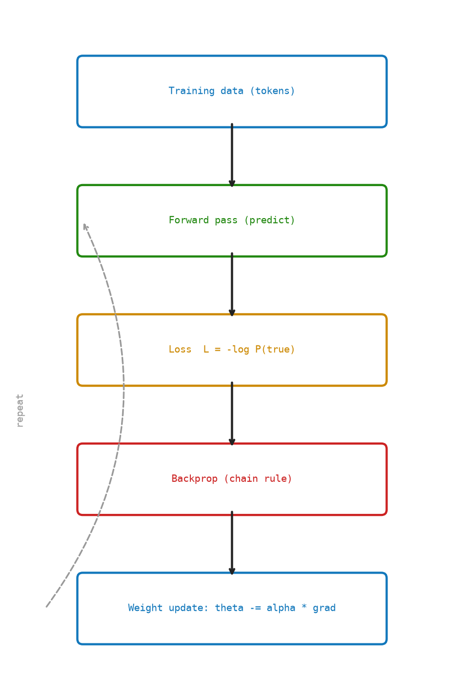

12 Training — Teaching the Model
Chapter 9 gave us a loss: a single number measuring how wrong the model is. But knowing how wrong we are is only half the battle. We also need to know which weights are responsible for the error, and by how much to change each one.
That is the job of training.
12.1 The Idea
The loss tells us how wrong the model was at its last prediction. Training uses that wrongness to improve the model — so it does better next time.
Here is the core loop, in plain terms:
- Forward pass: feed a sentence into the model, let it predict the next word at every position, measure how wrong those predictions were (the loss).
- Backward pass: trace back through every calculation the model just made and figure out — for each weight — whether increasing it would have made the loss higher or lower, and by how much. This produces a gradient for every weight.
- Update: nudge each weight slightly in the direction that reduces the loss. Weights that caused big errors get bigger nudges; weights that barely mattered get smaller nudges.
- Repeat: billions of times, across trillions of words.
That is the entire training algorithm.
12.2 The Goal: Move the Loss Down
The model has millions of parameters. Call them collectively \(\theta\). The loss \(\mathcal{L}(\theta)\) is a function of all of them. We want to find \(\theta\) that minimizes the loss.
The strategy is gradient descent: repeatedly take a small step downhill on the loss surface.
\[ \theta \leftarrow \theta - \eta \cdot \nabla_\theta \mathcal{L} \]
\(\eta > 0\) is the learning rate — how big a step to take. \(\nabla_\theta \mathcal{L}\) is the gradient: a collection of partial derivatives, one per parameter.
Math Minute — Partial Derivatives
A partial derivative \(\frac{\partial \mathcal{L}}{\partial w}\) answers: if we increase \(w\) by a tiny \(\epsilon\) while holding every other weight fixed, by how much does \(\mathcal{L}\) change?
A large positive value means \(w\) is pushing loss up — decrease it. A negative value means the opposite. Zero means \(w\) is momentarily irrelevant to the loss.
Notation: \(\partial\) (curly d) instead of \(d\) signals “partial” — other variables are held constant.
12.3 The Chain Rule
Backpropagation is the chain rule from calculus, applied to a computation graph.
Suppose the loss depends on weight \(w\) through a chain of intermediate values:
\[ w \xrightarrow{f} z \xrightarrow{g} \mathcal{L} \]
The chain rule says:
\[ \frac{d\mathcal{L}}{dw} = \frac{d\mathcal{L}}{dz} \cdot \frac{dz}{dw} \]
If we know how \(\mathcal{L}\) varies with \(z\), and how \(z\) varies with \(w\), we multiply to get how \(\mathcal{L}\) varies with \(w\).
In a transformer, the chain has hundreds of layers. Backprop starts at the loss and works backward, multiplying local derivatives as it goes. Each layer only needs two things: the gradient arriving from the layer above (called \(\delta\), “delta”), and its own local derivative.
12.3.1 Step 1: A gradient update for one weight
def sgd_update_scalar(weight: float, gradient: float, learning_rate: float) -> float:
return weight - learning_rate * gradientIf the gradient is positive (loss rises when \(w\) increases), we subtract — decreasing \(w\). If negative, we add. The learning rate \(\eta\) scales how large the step is.
This is the entire idea. Everything that follows is this rule, applied to millions of weights simultaneously.
12.4 Backprop Through Softmax and Cross-Entropy
Chapter 9 stated the softmax-CE gradient without proof:
\[ \frac{\partial \mathcal{L}}{\partial z_j} = P(j) - \mathbb{1}[j = t] \]
where \(z_j\) are the logits and \(t\) is the true token.
For the true token \(j = t\): gradient is \(P_t - 1\) (negative, so we push \(z_t\) up). For every other token: gradient is \(P_j\) (positive, so we push those logits down). The model is nudged to be more confident about the correct answer.
def softmax_cross_entropy_grad(logits: Sequence[float], true_id: int) -> Vector:
grad = softmax(logits)
grad[true_id] -= 1.0
return grad12.5 Backprop Through a Linear Layer
The most common operation in a transformer is a linear layer: \(y = Wx\).
Given the upstream gradient \(\delta = \frac{\partial \mathcal{L}}{\partial y}\) (arriving from the layer above), the chain rule gives:
\[ \frac{\partial \mathcal{L}}{\partial W} = \delta \cdot x^\top \qquad \frac{\partial \mathcal{L}}{\partial x} = W^\top \cdot \delta \]
The first equation tells us how to update \(W\). The second passes the gradient backward to whatever fed \(x\) into this layer.
12.5.1 Step 2: Linear layer backward pass
def linear_backward(delta: Vector, weights: Matrix, x: Vector) -> tuple[Matrix, Vector]:
grad_w = [[delta_i * x_j for x_j in x] for delta_i in delta]
grad_x = [sum(weights[i][j] * delta[i] for i in range(len(delta))) for j in range(len(x))]
return grad_w, grad_x12.6 Accumulating Gradients Across the Sequence
We compute the softmax-CE gradient independently at each position \(t\). But all positions share the same unembedding matrix \(W_u\) (and the same transformer weights). Their gradient contributions must be summed before updating any weight.
12.6.1 Step 4: Summing gradient contributions
def accumulate_gradients(gradients: Sequence[Matrix]) -> Matrix:
rows, cols = shape(gradients[0])
total = make_matrix(rows, cols)
for gradient in gradients:
total = matrix_add(total, gradient)
return totalThe more a weight influenced the output at many positions, the larger (and more reliable) its accumulated gradient.
12.7 The Gradient Descent Step
With gradients accumulated for every parameter, the update rule is:
\[ W \leftarrow W - \eta \cdot \frac{\partial \mathcal{L}}{\partial W} \]
12.7.1 Step 5: Updating a weight matrix in place
def sgd_update_matrix(weights: Matrix, gradient: Matrix, learning_rate: float) -> None:
for i, row in enumerate(weights):
for j, value in enumerate(row):
row[j] = value - learning_rate * gradient[i][j]Every entry \(W_{ij}\) moves a small step in the direction that reduces the loss.
12.8 One Training Step
Now we can assemble the full cycle: forward pass to get predictions and loss, backward pass to get gradients, update pass to improve every weight.
12.9 Watching the Loss Fall
Running thousands of training steps, the loss curve looks roughly like this:
| Step | Loss | Perplexity | Interpretation |
|---|---|---|---|
| 0 | 10.82 | 50,000 | Random — model knows nothing |
| 100 | 6.91 | 1,000 | Ruling out most tokens |
| 1,000 | 4.61 | 100 | Learned basic frequency |
| 10,000 | 2.30 | 10 | Has rough grammar |
| 100,000 | 0.92 | 2.5 | Strong language model |
The curve drops steeply at first (obvious mistakes are easy to fix) then more slowly and noisily (subtle patterns are harder and data points disagree).
Why does loss get noisy later?
Early on, large gradients correct glaring errors. Later, gradients are smaller and point in slightly different directions for different training examples. The noise is not a bug: random variation in gradient direction helps the model escape poor local minima. This is the stochastic in stochastic gradient descent (SGD).
Figure Figure 12.1 shows gradients flowing backward from the loss through each layer while weights are updated.

12.10 Key Takeaways
- Gradient descent moves every weight downhill: \(\theta \leftarrow \theta - \eta \nabla_\theta \mathcal{L}\).
- Partial derivatives measure the sensitivity of the loss to each individual weight, holding all others fixed.
- Backpropagation is the chain rule applied layer by layer from loss to inputs. Each layer only needs the upstream gradient \(\delta\) and its own local derivative — no global information required.
- Linear layer backward: \(\frac{\partial \mathcal{L}}{\partial W} = \delta x^\top\), \(\frac{\partial \mathcal{L}}{\partial x} = W^\top \delta\). The same two matrices as the forward pass, just transposed and multiplied in a different order.
- Softmax-CE gradient is \(P(j) - \mathbb{1}[j = t]\): the model’s predicted probability minus the true label. Nearly zero when correct and confident; large when wrong.
- Shared weights accumulate gradients from every position in the sequence before any update is applied.
- The six-step cycle — forward, loss, backward, accumulate, update, repeat — is all of training. Every weight in the model, over billions of tokens, updated by exactly this loop.